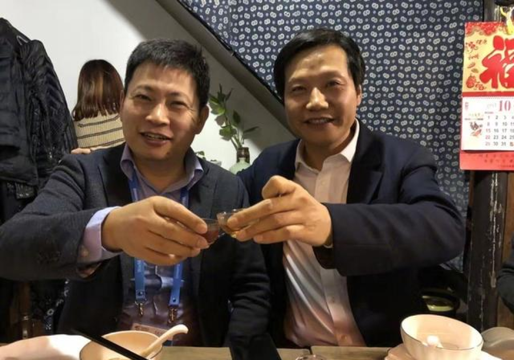
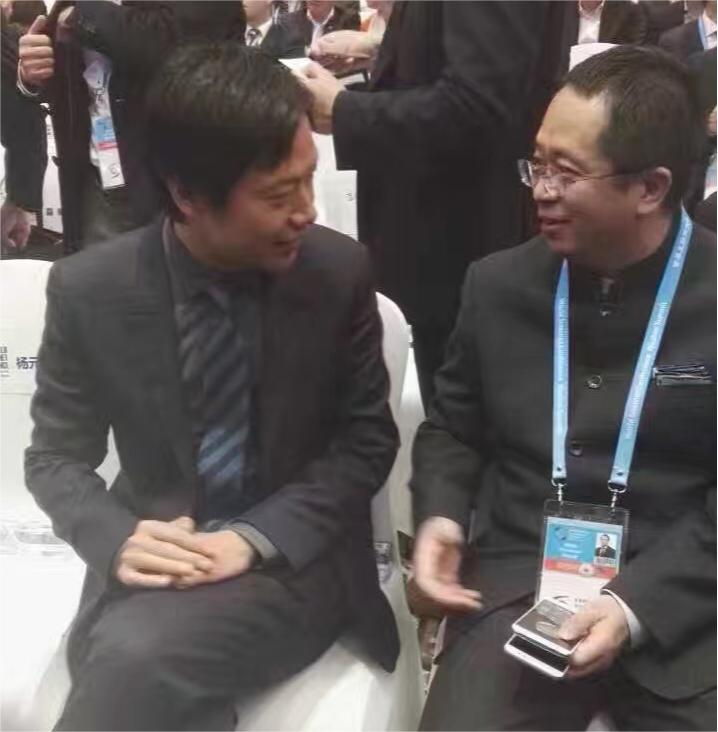

永远相信美好的事情即将发生
小米集团成立于2010年4月，2018年7月9日在香港交易所主板挂牌上市(1810.HK)，是一家以智能手机、智能硬件和IoT平台为核心的消费电子及智能制造公司。 胸怀“和用户交朋友，做用户心中最酷的公司”的愿景，小米致力于持续创新，不断追求极致的产品服务体验和公司运营效率，努力践行“始终坚持做感动人心、价格厚道的好产品，让全球每个人都能享受科技带来的美好生活”的公司使命。“和用户交朋友，做用户心中最酷的公司”的愿景在驱动着我们努力创新，不断追求极致的产品和效率，成就了一个不断缔造成长奇迹的小米。

“友商”之争
雷军和余承东两人在20年前就相识，两人还会交流手机使用体验。2014年之后华为在产品、布局、营销上，对小米从牙齿模仿到脚跟。2014年9月开始双方正式开始相爱相杀，包括但不限于产品互相压价、模仿对方产品、与对方产品相互比性能的报告发到公众平台。近期，两人开始更多地强调合作和共同推动行业发展的必要性，尤其是在智能电动汽车领域。这种态度的转变反映了他们对行业大局的认识和对未来发展的期待。

约架公园
两人本是好友但因性格问题，终究注定非友。以至于后面在微博互骂，甚至约架公园。但最近在互联网30周年座谈会上，两人与其他业界巨头同台，曾经的恩怨已成为笑谈

五年之约
2013年12月12日的年度经济人物评选上，小米董事长雷军和格力集团董事长董明珠立下了一个“赌约”：如果5年之内，小米的营业额击败格力，董明珠输给雷军一块钱。董小姐随即表示：“我跟你赌10个亿”。这便是著名的五年十亿赌局。最终董小姐赢了，但第二年小米就反超格力了。但也可以说都赢了，这次所谓的赌局，成功的吸引了媒体的眼球，这种传播极大的提升了品牌力，双方互相拉抬声势，实现了双赢。